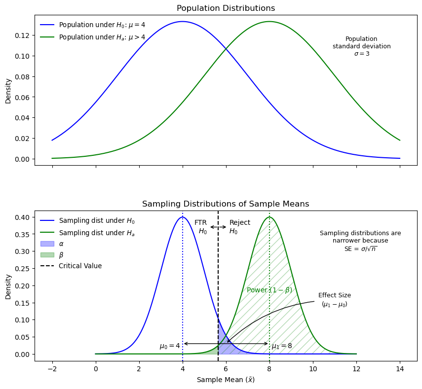

If the null hypothesis (\(H_0\)) is true, the test is correct when it fails to reject\(H_0\).
Rejecting \(H_0\) when it is true is a Type I error, with a probability equal to \(\alpha\).
The critical value determines the rejection region. If \(\bar{x}\) falls on the \(H_0\) side, the test fails to reject.
There is an \(\alpha\)% chance that \(H_0\) is true and \(\bar{x}\) is as extreme or more extreme than the critical value, leading to a Type I error.
Type II Error
If \(H_0\) is false, the test is correct when it rejects\(H_0\).
Failing to reject \(H_0\) when it is false is a Type II error, with a probability equal to \(\beta\).
Hypothesis Test Outcome Matrix
The following matrix summarizes the four possible outcomes of a hypothesis test, highlighting the probabilities of Type I error (\(\alpha\)), Type II error (\(\beta\)), and power (\(1 - \beta\)).
Matrix of hypothesis test outcomes based on the truth of \(H_0\) and the decision to reject or not reject.
Power
Power is the probability of correctly rejecting \(H_0\) when it is false (\(1 - \beta\)).
It measures the test’s ability to detect true differences between population distributions.
Higher power means a greater likelihood of detecting a real effect.
Example power statement: “At [power level]% power, this study can detect an effect size of \(\Delta\) or larger at \(\alpha\) = [significance level] with \(n\) = [sample size].”
Effect Size
Effect size is the difference between the null mean and the true mean.
Example: If the null mean is 50 and the true mean is 60, the raw effect size is 10.
Cohen’s d is a standardized measure of effect size: \[
d = \frac{\text{raw effect size}}{\text{standard deviation}} = \frac{\mu_1 - \mu_0}{\sigma}
\]
It normalizes the difference between the means using the standard deviation.
Increasing effect size increases power and decreases \(\beta\), but it does not affect the critical value or \(\alpha\).
Power and the probability of a Type II error depend on the actual value of \(\mu\).

Sampling Distributions, Power, and Effect Size. This diagram illustrates the relationship between effect size, critical values, power, and Type I and Type II errors. Narrower distributions from larger sample sizes improve the ability to detect true differences.
How to Increase Power
Increase effect size: Larger differences are easier to detect.
Increase \(\alpha\): A less stringent threshold makes rejection more likely. Increasing \(\alpha\) makes the critical value less extreme, making it easier for the test statistic to exceed it, thus increasing the chance of rejecting \(H_0\).
Increase sample size: Larger samples reduce variability in \(\bar{x}\), making it more likely to be close to \(\mu\) and increasing the likelihood of detecting true effects.
Note: If power is close to \(\beta\), the chances of detecting a difference or making a Type II error are similar. This may occur when the effect size is small. Increasing the sample size can help.
Balancing Type I and Type II Errors
Reducing \(\alpha\) decreases the probability of a Type I error but increases the probability of a Type II error.
There is often a trade-off between these two error types, so both should be considered in study design.
Example Code For Finding Power or Other Missing Parameters
R code:
Code
library(tidyverse)## Missing parameter is indicated with `NULL`# One-sample t-test power calculationpower.t.test(n =41, delta = .07, sd =0.2, sig.level =0.05,power =NULL, type ="one.sample", alternative ="one.sided")# Two-sample t-test examplepower.t.test(n =250, delta =5,sd =25, sig.level =0.05, power =NULL, type ="two.sample", alternative ="one.sided")
SAS code:
Code
/* Missing parameter is indicated with a period */
/* One-sample t-test */
proc power;
onesamplemeans
sides = 1
alpha = 0.1
nullmean = 20000
mean = 20450
stddev = 500
ntotal = 8
power = .; /* parameter to solve for */
run;
/* Two-sample t-test */
proc power;
*can specify mean for each (nullmean) and ntotal;
twosamplemeans
sides = 1
alpha = 0.05
meandiff = 4
stddev = 3
npergroup = 50
power = .; /* parameter to solve for */
run;
Example Code For Creating a Power Curve
R code:
Code
# Loop to calculate power for sample sizes from 60 to 80powerholder =c()samplesizes =seq(60, 80, by =1)for(i in1:length(samplesizes)) { powerholder[i] =power.t.test(n = samplesizes[i], delta =0.07, sd =0.20, sig.level =0.05,type ="one.sample", alternative ="one.sided")$power}# Create a data framepowerdf =data.frame(samplesizes, powerholder)# Plot the power curvepowerdf %>%ggplot(aes(x = samplesizes, y = powerholder)) +geom_line(color ="blue3", linewidth =1.5) +ggtitle("Power Curve") +ylab("Power") +xlab("Sample Size") +ylim(0.75, 1.0) +theme_bw()
SAS code:
Code
/* Power curve for different sample sizes */
ods graphics on;
proc power;
onesamplemeans
sides = 1
alpha = 0.05
nullmean = 0
ntotal = 60 80
mean = 0.07
stddev = 0.2
power = .; /* parameter to solve for */
plot x = n min = 60 max = 80;
run;
ods graphics off;
/* Power curve for different effect sizes */
ods graphics on;
proc power;
twosamplemeans
sides = 1
alpha = 0.05
nulldiff = 0
meandiff = 3 to 5 by 0.1
ntotal = 47
stddev = 4.5
power = .; /* parameter to solve for */
plot x = effect min = 3 max = 5;
run;
ods graphics off;
Summary of Start-to-Finish Analysis for Client Presentation
Initial Meetings & Research Planning Phase
Define key parameters, such as desired power (e.g., at least 80%).
Conduct a power analysis to determine required sample sizes for different power thresholds.
Provide multiple design options based on budget and desired power.
Create power curves to visualize trade-offs between sample size and power.
Final Presentation & Results Communication
Restate the research question and test parameters.
Display descriptive statistics and plots (e.g., boxplots, histograms).
Present test results, including p-values and confidence intervals.
Include a summary of assumptions and a six-step test outline in the appendix.